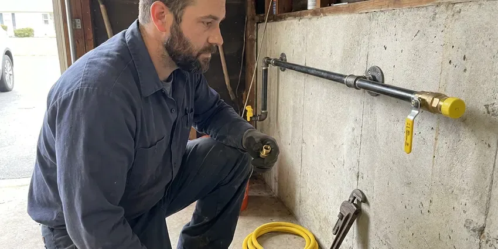

Electric Tankless Water Heater Installation in Watford City, ND
Considering an electric tankless water heater for your Watford City, ND property? HPN Plumbing provides professional installation services matched to your needs.
- Fast Tankless Installation
- Expert Plumbers
- Quick, Reliable Installation
- Licensed and Insured Plumbers

Ready for Instant Hot Water in Watford City, ND?
Our skilled technicians are ready to provide a free estimate and professional service for your Watford City home.
Reliable Electric Tankless Water Heater Installation for Watford City, ND Homeowners
HPN Plumbing focuses on electric tankless water heater installation for homes across Watford City and the surrounding North Dakota areas. These modern units provide hot water on demand, saving space and energy compared to traditional tank models. Our licensed plumbers deliver a proper, safe and code-compliant installation.
Our expertise includes:
- Whole-home electric tankless units from Stiebel Eltron and Rheem
- Accurate Electrical Load Assessment
- Leak-Free Water Line Connections

Additional Plumbing Installation Services in Watford City, ND
We install water heaters, pumps, lines, and fixtures across Watford City, ND with careful, permitted work that passes inspection the first time.




Gas Line Installation in Watford City

Customers
Why Choose HPN Plumbing for Electric Tankless Water Heater Installation in Watford City, ND?
Choosing HPN Plumbing for your electric tankless water heater installation means partnering with experienced local plumbers. We understand the particular demands of North Dakota homes and water conditions.
- Electrical Coordination, We review panel capacity and coordinate dedicated circuits when needed.
- Energy Savings, Heat water only when you need it, cutting down on wasted energy and utility costs.
- Space Saving, These compact units mount on a wall, freeing up useful floor space in your garage or utility closet.
Citywide Coverage
We install electric tankless water heaters in homes, condos and guest suites throughout Watford City. Wall-mounted units fit well in garages, closets and utility rooms.
Experienced Team
Our plumbers have installed electric tankless units for whole homes and individual fixtures. They understand flow sizing and how temperature rise affects performance.
Safety-First Approach
Safety and code compliance are top priorities for every electric tankless water heater installation we undertake in Watford City. We make sure all electrical connections are safe, properly grounded and meet current North Dakota electrical codes to prevent any hazards.
Trusted Certified Watford City Plumbing Services Professionals
At HPN Plumbing, we take pride in providing licensed, certified plumbing services throughout Watford City, ND. Backed by leading industry credentials, our experienced plumbers combine technical skill with genuine customer care. Whether it is repair, installation, or maintenance, we follow strict safety and quality standards to deliver long-lasting results you can trust.
Call Us Now PHCC Plumbing Contractor Recognition
PHCC Plumbing Contractor Recognition Better Business Bureau (BBB) Accreditation
Better Business Bureau (BBB) Accreditation Angi Certified Pro
Angi Certified Pro ISO 9001 Quality Management Certification
ISO 9001 Quality Management CertificationAdvanced Electric Tankless Water Heater Installation Services in Watford City, ND
Commercial Electric Tankless Water Heater Installation in Watford City
Businesses in Watford City can also benefit from the efficiency and space-saving advantages of electric tankless water heaters. We install commercial-grade units for various applications, from restaurants to offices, providing hot water on demand without the need for large storage tanks. Our commercial installations are designed to meet the higher demands of business operations, providing reliable hot water for your employees and customers while adhering to all commercial building codes and safety regulations.

Residential Electric Tankless Heater Installation in Watford City
For homeowners in Watford City, we provide custom electric tankless water heater installation services. We assess your household's hot water demand, existing electrical capacity and main water line size to recommend the right unit. Our team handles everything from permit acquisition to final testing, ensuring a hassle-free upgrade to endless hot water. Strong winds and extreme cold can drive frost into walls and crawlspaces, reaching pipes that seem well protected.
Rheem Electric Tankless Water Heater Services in Watford City
Rheem is another trusted name in electric tankless water heaters, offering a range of models suitable for different home sizes and budgets in Watford City. Our team has extensive experience with Rheem installations, ensuring proper electrical connections, water flow and system calibration. We help you choose the right Rheem model that aligns with your hot water demands and energy efficiency goals.
Emergency Electric Tankless Water Heater Replacement in Watford City, ND
If your old water heater suddenly fails and you need a fast replacement, HPN Plumbing offers emergency electric tankless water heater installation services in Watford City, ND. We understand the urgency of restoring hot water to your home or business. Our team can promptly assess your needs, recommend a suitable electric tankless unit and perform the installation with minimal disruption. We focus on rapid response to get your hot water flowing again.
Navien Electric Tankless Water Heater Installation in Watford City, ND
HPN Plumbing is proficient in installing leading brands like Navien, known for their high-efficiency tankless water heaters. Navien units offer advanced features and reliable performance, providing consistent hot water with precise temperature control. We ensure your Navien unit is installed according to manufacturer specifications and local Watford City, ND codes for optimal function and warranty validity.
Emergency Electric Tankless Replacements in Watford City, ND
If your old water heater suddenly fails and you need a quick replacement in Watford City, ND, HPN Plumbing offers emergency electric tankless water heater installation. While a full tankless conversion requires careful planning, we can often arrange a rapid replacement to restore hot water to your home. We prioritize urgent situations to minimize inconvenience and get your system up and running promptly.
Electric Tankless for Guest Suites and Additions in Watford City, ND
Guest houses, guest suites and home additions often sit far from the main water heater. Running long hot water lines wastes water and energy. An electric tankless unit installed near the fixtures provides quick hot water. We size the unit for the space and its fixtures. This is an efficient solution for detached living spaces.

Ecosmart Electric Tankless Water Heater Installation in Watford City, ND
Ecosmart electric tankless water heaters are popular for their smart technology and energy-saving features. HPN Plumbing provides expert installation of Ecosmart units across Watford City, ND. We confirm your home's electrical system can support the unit's requirements, providing safe and efficient operation. Our installation process guarantees that you'll get the best performance and energy efficiency out of your new Ecosmart water heater, helping you save on utility bills year-round.
Electric Tankless Water Heater Installation Near Me in Watford City, ND
When you search for electric tankless water heater installation near me, our local team is ready to help. We evaluate your home and recommend the right size unit. Installations are scheduled promptly.
If you're searching for 'electric tankless water heater installation near me' in Watford City, ND, look no further than HPN Plumbing. Our local plumbers are familiar with the area's water conditions and building standards, ensuring a custom and effective installation. We're committed to providing prompt and reliable service to our community.
HPN Plumbing at a Glance
- Licensed and insured plumbers serving Watford City, ND
- 24/7 emergency service with same-day scheduling
- Upfront, flat-rate pricing before work begins
- 4.9-star rated by 408+ North Dakota customers
Watford City Map
Watford City Information
- Population
- 6,020
- Area codes
- Local
- Service area
- Watford City and communities within 40 miles
- Nearby
- Williston, Dickinson, Minot, Minot AFB
Installing an electric tankless water heater in Watford City, ND is a smart move for energy efficiency, since the unit heats water only when you need it and avoids standby heat loss.
Expert Services
Trust our professionals for reliable HPN Plumbing solutions in Watford City, ND.
Our Specialized Plumbing Services in Watford City, ND
At HPN Plumbing, we provide a complete range of plumbing services across Watford City, ND. From leak detection to full system installations, our team ensures fast, precise, and affordable service for both residential and commercial properties. Explore our core services below:


How Our Electric Tankless Water Heater Installation Process Works in Watford City, ND
Our electric tankless installation process is designed for safe wiring, correct sizing and reliable hot water.
Request a Quote
Call (701) 403-1348 or fill out our online form to schedule an initial consultation. We'll discuss your hot water needs and assess your home's electrical and plumbing systems.
On-Site Assessment
Our experienced technician will visit your Watford City home to evaluate your current setup, determine the best location for the new unit and confirm electrical requirements. This step is crucial for proper sizing.
Professional Installation
We meticulously install your new electric tankless water heater, making all necessary electrical connections and water line adjustments and ensuring proper flow and pressure. We test the unit carefully.
Frequently Asked Questions About Electric Tankless Water Heater Installation in Watford City
Point-of-use units usually cost $500 to $1,500 installed. Whole-home electric tankless installations often run $1,500 to $4,500, and panel upgrades can add $2,000 to $4,000.
Most electric tankless installations require plumbing and electrical permits. We handle permits and coordinate inspections.
Sizing an electric tankless water heater correctly is crucial and depends on factors like the number of hot water fixtures in your home, your incoming groundwater temperature and your peak hot water demand. Our technicians will perform a careful assessment to recommend the right size for your Watford City household.
Whole-home units can require 100 amps or more, so many homes need a panel review. We assess your panel and coordinate upgrades if needed.
Most electric tankless water heaters come with a manufacturer's warranty, usually 5 to 10 years on the heat exchanger and 1 to 3 years on parts. HPN Plumbing also provides a labor warranty on our installation services. We will discuss specific warranty details for your chosen unit during your consultation.
Electric tankless water heaters offer endless hot water, real energy savings by heating only on demand and a compact size that saves valuable space. They also avoid standby heat loss, contributing to lower utility bills year-round. Strong winds and extreme cold can push frost into walls and crawlspaces, reaching pipes that seem well protected.
For North Dakota homes, electric tankless water heaters offer significant energy savings by only heating water on demand, which is beneficial year-round. They also provide endless hot water and save space, which can be particularly useful in older homes with smaller utility areas.
Most electric tankless water heater installations can be completed within a single day, usually 4 to 8 hours. However, if major electrical panel upgrades or extensive re-piping are required, the process may extend into a second day. We aim to minimize disruption and restore your hot water as quickly as possible.
What People Are Saying About Our Plumbing Experts?

James P.
Our commercial plumbing system had a leak under the sink, and HPN Plumbing handled it professionally. The plumbers arrived quickly and restored everything without disruption to our customers.
Commercial Plumbing · Dickinson, ND
Patricia H.
We had a slab leak that two other companies could not find. HPN Plumbing located it in under an hour, explained our options, and the price matched the quote to the dollar.
Slab Leak Repair · Minot AFB, ND
Emily R.
I called HPN Plumbing for plumbing repair, and the technician was fast, polite, and thorough. They explained the problem clearly and fixed it the same day. I will definitely hire them again. Highly recommended!
Plumbing Repair · Williston, ND
Sofia M.
Two new toilets installed in one visit, no mess left behind, and the tech even adjusted a faucet he noticed was dripping. Fair pricing and really friendly.
Toilet Installation · Minot AFB, NDRobert G.
The trenchless sewer replacement saved our front yard. They walked us through the camera inspection footage first so we knew exactly what we were paying for.
Sewer Line Replacement · Mandan, ND
Mark T.
When our office needed drain cleaning, HPN Plumbing provided quick, reliable service. The plumber arrived on time and made sure every drain flowed perfectly before leaving. Very satisfied.
Drain Cleaning · Watford City, ND